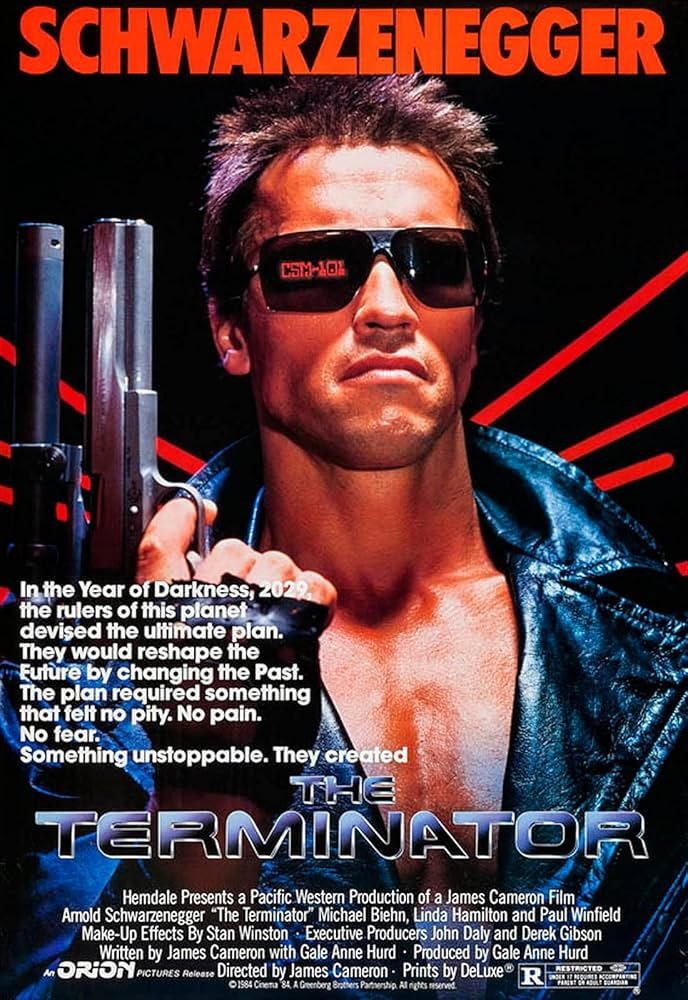

O Exterminador do Futuro (1984)

Diretor: James Cameron
Atores Principais: Arnold Schwarzenegger, Linda Hamilton e Michael Biehn
Gênero: Ficção Científica / Ação
Censura: 14 anos
Duração: 107 minutos (1h 47min)
Sinopse
Um ciborgue indestrutível conhecido como Exterminador é enviado do ano de 2029 para 1984 com a missão de assassinar Sarah Connor, uma jovem cuja existência é crucial para a futura sobrevivência da humanidade. Para protegê-la, um soldado da resistência humana também viaja no tempo, iniciando uma perseguição implacável pelas ruas de Los Angeles.
← Voltar ao catálogo